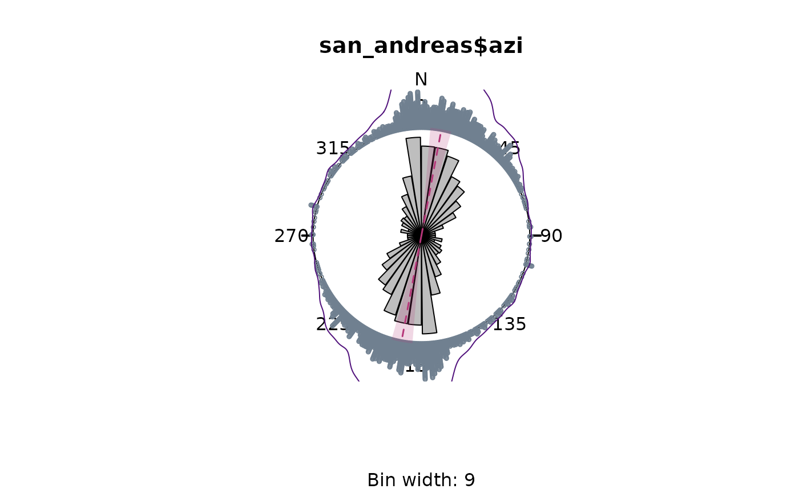

Plot the multiples of a von Mises density distribution
Usage
plot_density(
x,
kappa,
axial = TRUE,
n = 512,
norm_density = TRUE,
...,
scale = 1.1,
shrink,
add = TRUE,
main = NULL,
labels = TRUE,
at = seq(0, 360 - 45, 45),
cborder = TRUE
)Arguments
- x
Data to be plotted. A numeric vector containing angles (in degrees).
- kappa
Concentration parameter for the von Mises distribution. Small kappa gives smooth density lines.
- axial
Logical. Whether data are uniaxial (
axial=FALSE) or biaxial (TRUE, the default).- n
the number of equally spaced points at which the density is to be estimated.
- norm_density
logical. Normalize the density?
- ...
Further graphical parameters may also be supplied as arguments.
- scale
radius of plotted circle. Default is
1.1.- shrink
parameter that controls the size of the plotted function. Default is 1.
- add
logical. Add to existing plot? (
TRUEby default).- main
Character string specifying the title of the plot.
- labels
Either a logical value indicating whether to plot labels next to the tick marks, or a vector of labels for the tick marks.
- at
Optional vector of angles at which tick marks should be plotted. Set
at=numeric(0)to suppress tick marks.- cborder
logical. Border of rose plot.
Examples
rose(san_andreas$azi, dots = TRUE, stack = TRUE, dot_cex = 0.5, dot_pch = 21)

plot_density(san_andreas$azi, bw = 10, col = "seagreen", shrink = 1.5)
#> Error in plot_density(san_andreas$azi, bw = 10, col = "seagreen", shrink = 1.5): argument "kappa" is missing, with no default